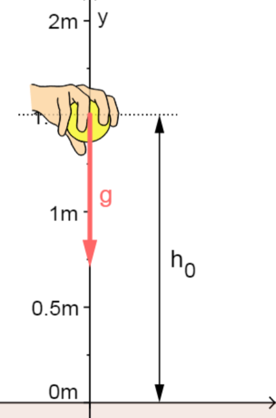

1. Kinematics: describing Motion.
Kinematics describes quantitatively how a body
moves through space. We’ll begin by treating the body
as rigid and non-rotating, so we can fully describe the
motion by following its center.
Measuring motion: a Frame of reference
Frame of reference: To measure motion, we must
first measure position. We measure position relative to
some fixed point O called the origin. We give the ball’s
location as (x,y,z): we reach it from O by moving x
meters along the x –axis, followed by y parallel to the y-
axis and finally z parallel to the z axis.

2.Freely falling objects.
1. Motion under gravity.
Free fall is a type of one-dimensional
vertical motion where objects accelerate only
under the influence of gravity. Free fall
motion occurs in only the vertical direction,
starting at a height h naught above the
ground.
Free fall is the motion of a body where
its weight is the only force acting on an
object (not air resistance).
The motion of falling objects is the
simplest and most common example of
motion with changing velocity. If a coin and
a piece of paper are simultaneously dropped
side by side, the paper takes much longer to
hit the ground. However, if you crumple the
paper into a compact ball and drop the items
again, it will look like both the coin and the
paper hit the floor simultaneously.
This is because the amount of force
acting on an object is a function of not only its mass, but also area.
Galileo also observed these phenomena and realized that it disagreed with
the Aristotle principle that heavier items fall more quickly. Galileo then
hypothesized that there is an upward force exerted by air in addition to the
downward force of gravity.
If air resistance and friction are negligible, then in a given location (because
gravity changes with location), all objects fall toward the center of Earth with
the same constant acceleration,independent of their mass
,
that constant
acceleration is gravity. Air resistance opposes the motion of an object through the
air, while friction opposes motion between objects and the medium through which
they are traveling.
On Earth, the acceleration due to gravity is a constant value we represent with the symbol g: g=9.81 m/s²
The acceleration of free-falling objects is referred to as the acceleration due to gravity g.
Gravity varies depending on location and altitude on Earth (or any other planet), but the average acceleration due to gravity on Earth is 9.8 m/s2.
So, it isn’t a true constant — it’s only “constant” enough for simplifying physics problems on our home planet!
This value is also often expressed as a negative acceleration in mathematical calculations due to the downward direction of gravity.
In the case of free fall, we don’t consider the effects of air resistance, friction, or any initially applied forces that don’t fit in with the definition of free-falling motion. An object undergoing free fall motion will descend a distance of Δy, sometimes called h0, from its initial position to the ground.
2. Motion under gravity or parabolic motion
A projectile is any object that once launched or dropped continues in motion by its own inertia and is influenced only by the downward force of gravity.
Projectile motion, also known as parabolic motion, is an example of composition of motion in two dimensions: an u.r.m. on the horizontal axis and a u.a.r.m. on the vertical axis.
3. Concept and Representation
Projectile motion, also known as parabolic motion, consists in launching a body with a velocity that form an angle α with the horizontal. In the following figure, you can see a representation of the situation.
Parabolic Motion
This motion is characteristic of projectiles, moving objects being affected only by gravity. On the x-axis, the body moves at constant velocity v0x (u.r.m.) and in the y-axis with constant acceleration due to gravity (u.a.r.m.).
It is characterized by the fact that at the highest point of the trajectory, the velocity of the body is always v0x (there is no vy).
Projectile motion or parabolic motion is the result of the composition of a uniform rectilinear motion (horizontal urm) and a uniformly accelerated rectilinear motion of launching upward or downward (vertical uarm).
The equations for projectile motion are:
The equations for the u.r.m. on the x-axis
x=x0+vx⋅t
The equations for the u.a.r.m. on the y-axis
vy=v0y+ay⋅t
y=y0+v0yt+12ayt2
Since, as we said above, the velocity forms an angle α with the horizontal, the x and y components are determined using the most common trigonometric relationships:
Decomposition of the velocity vector
Any vector, including the velocity, can be broken down is in 2 vectors,
v x and v y , that have the same directions as the Cartesian axes. The magnitude of
both vectors can be calculated from the angle that the vector forms with the
horizontal through the expressions shown in the figure.
Finally, taking into consideration the above said, that y 0 = H,x 0 = 0, and
thata y = -g, we can rewrite the formulas as are shown in the following list.
These are the final expressions for calculating kinematics magnitudes in
projectile motion or parabolic motion:
4. Definitions
Maximum height
This value is reached when the velocity in the y-axis, vy , is 0. Starting from the equation of velocity in the y-axis, and making vy = 0, we get the time t that it takes the body in get to this height. From that time, and from the equations of position, we can calculate the distance to the origin in the both axes, the x-axis and y-axis.
Flight time
It is calculated for y = 0, the vertical component of the position. That is, the flight time is the time required for the height to become 0 (the projectile reaches the ground).
Range
It is the maximum horizontal distance, from the starting point of the motion to the point in which the body hits the ground. Once the strong>flight time is obtained, simply substitute in the equation of position of the horizontal component.
Angle of the trajectory
The angle of the trajectory in a given point is the same as the angle that the velocity vector form with the horizontal at that point. To calculate it, we get the components vx and vy and from the trigonometric definition of the tangent of an angle, we calculate α:
tan(α)= opposite side adjacent side =vyvx⇒ α= tan−1(vyvx)